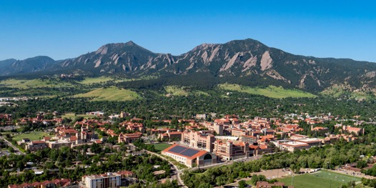

Photo: Glenn Asakawa / University of Colorado

Photo: Glenn Asakawa / University of Colorado
The ACS Colloid and Surface Science Symposium is the premier annual meeting of the colloid and surface science community, convening researchers from academia, national laboratories, and industry. Its 101st edition will be hosted by the University of Colorado Boulder, June 13–16, 2027, featuring plenary lectures, award symposia, parallel technical sessions, and a poster session spanning soft matter, interfaces, self-assembly, nanomaterials, and emerging directions across the field.
We warmly invite you to join us in Boulder.
A leading public research university in one of the most striking settings in the country.
Technical sessions and convenient, affordable on-campus housing at CU Boulder, a top-tier public research university.
The Flatirons and Rocky Mountain trailheads rise just minutes from campus, with Chautauqua Park nearby.
Pearl Street's restaurants, cafés, and walkable pedestrian mall are a short trip from the university.
Denver International (DEN) lies about 45 minutes away, with direct flights from across the U.S. and abroad.
Tentative — full program to come.
Welcome Reception
Sessions · Poster Session
Sessions · Banquet
Sessions (half day)
Registration, abstract submission, plenary & award speakers, and lodging & travel details will be announced here. Check back soon — or email us to join the mailing list.
Join the mailing listUniversity of Colorado Boulder